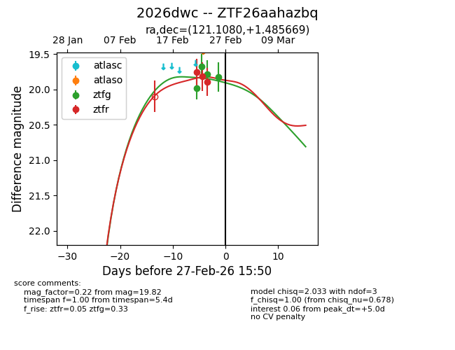
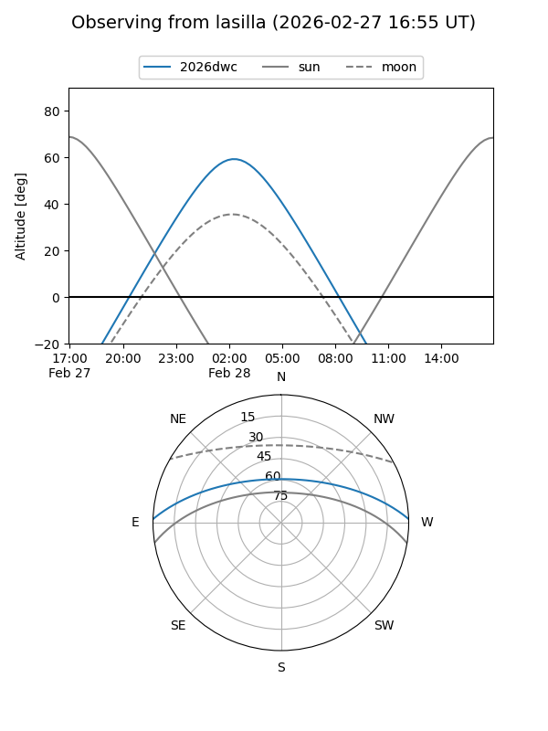
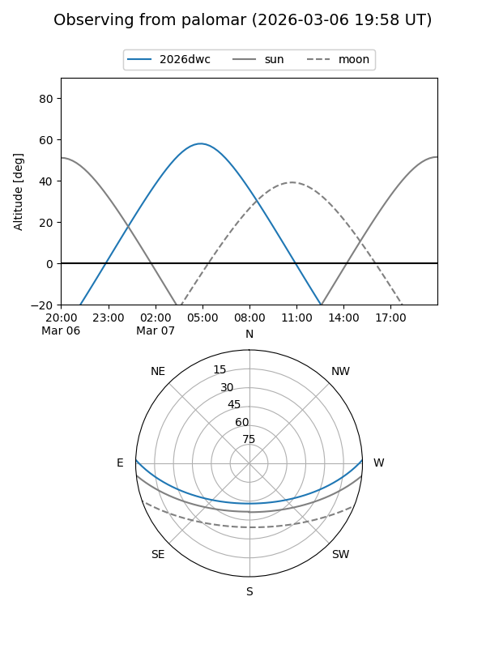
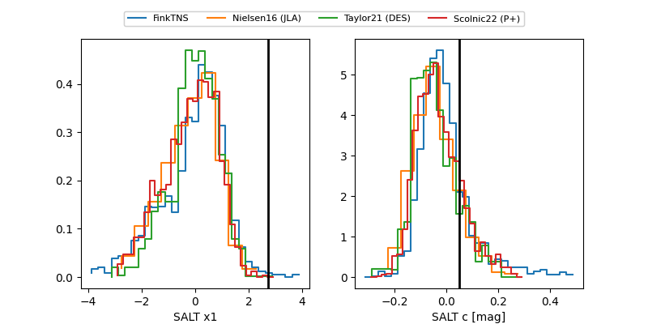

2026dwc
Target 2026dwc at 2026-02-27 15:53
Aliases and brokers:
FINK: link
Lasair: link
ALeRCE: link
TNS: link
YSE: link
alt names
ZTF26aahazbq (ztf,fink_ztf)
2026dwc (tns,yse)
Coordinates:
equatorial (ra, dec) = 121.1080,+1.48567
equatorial (HMS+DMS) = 08:04:25.93,+01:29:08.41
galactic (l, b) = (220.1158,+16.88305)
Flags:
Photometry:
last ztfg=19.82, ztfr=19.89
4 ztfg, 3 ztfr detections
Lightcurve

Visibility


Additional plots
